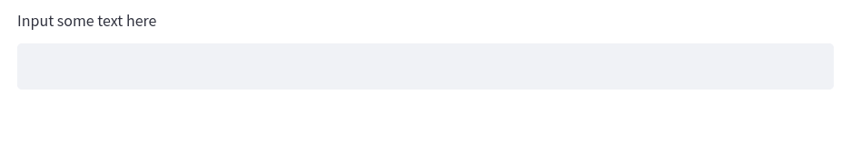
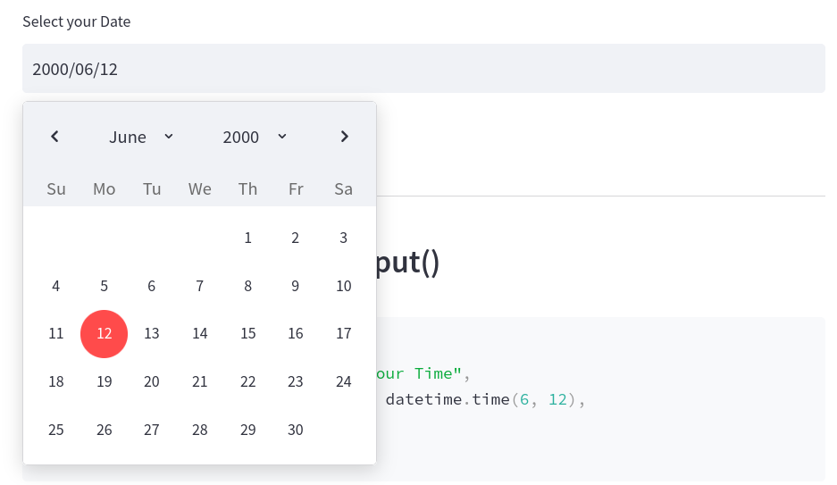
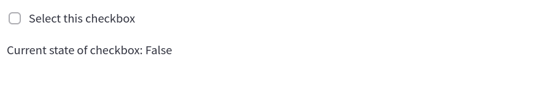
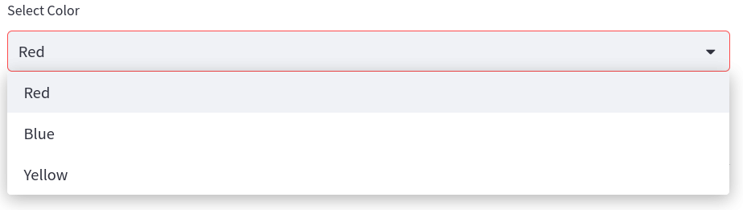

Streamlit Input Widgets
Contents
1.3. Streamlit Input Widgets#
Often when you are designing your application, you will need a way to allow the user to interact with the app. When this occurs, you want a way to do something that that user input. There are many ways that we can allow a user to interact with our data in Streamlit. In this section, we will cover five of the main categories:
text input
numerical input
date input
boolean input
selection input
1.3.1. Text Input Widgets#
Streamlit offers two ways to allow users to input textual data into an application. You can either use st.text_input() or st.text_area(). Both essentially do precisely the same thing, that is, return a string from the user; but each should be used in specific situations. Streamlit’s st.text_input() is designed for shorter text (such as names, queries, etc.), while st.text_area() should be used for longer string input data, such as text that can be processed via a spaCy pipeline.
1.3.1.1. st.text_input()#
user_text = st.text_input("Input some text here")
st.write(user_text)
The output will look like this in your application:

1.3.1.2. st.text_area()#
To create a text area style input, you can use the precise same code, but replace text_input with text_area. Both of these classes also let us pass an additional argument for some default text as the second parameter. We can add some default text that will prepopulate the text field with a predetermined string.
default_text = st.text_area("Input some text here", "default text")
st.write(default_text)
The output will look like this in your application:

1.3.2. Numerical Input Widgets#
While you could let a user input numerical data inside of st.text_input()or st.text_area(), this really would be inappropriate. Both of these input options return strings. This means that if you gave the user the ability to input numerical data, you would have to convert it to either an integer or float. In addition to this, the text input widgets do not offer any special keyword arguments that you can pass to the widget that are specific to numerical data, such as minimum value and maximum value.
It is far better in these scenarios to use one of two options for numerical input.
1.3.2.1. st.number_input()#
The first option is st.number_input(). This feature lets a user input a numerical data that they can tick up or down via a minus or plus sign in the widget. The widget will return an integer or float, depending on how you structure the widget.
Users can also manually type in a specific number. Another feature of this widget is the ability to specify a minimum value (with the min_value argument) and maximum value (with the max_value argument). You can also give the user a default value by setting the value argument to a specific number. Finally, you can even provide a step argument which will step up every n-numbers, so a step of 2 would increase the value by two each time the user clicks the plus symbol in the widget.
user_number = st.number_input("Input Number",
min_value=1,
max_value=10,
value=5,
step=1)
st.write(user_number)
The output will look like this in your application:

1.3.2.2. st.slider()#
Another way to let a user input data is via the st.slider() widget. This widget will also return an integer or a float, depending on if your values are in decimal form.
slider_number = st.slider("Select your Number",
min_value=1,
max_value=10,
value=5,
step=1)
st.write(slider_number)
The output will look like this in your application:

1.3.3. Date and Time Input Widgets#
Working with dates and times is essential in a lot of applications and Streamlit has two widgets for receiving time-series data. Both will require the use of the built-in library datetime, so be sure to import this if you intend to work time time-series data in your application.
1.3.3.1. st.date_input()#
The first widget is st.date_input(), this allows you to receive a date object which will allow you to structure robust logic, such as finding all data that fall between a start date and end date. When creating the widget, you can simply use the defaults, but if you expect all your data to fall between two dates, it may be wise to set minimum and maximum values. You can do this via the datetime library date method. You should ensure that all values in the st.date_input() widget conform to the following format:
datetime.date(2000, 6, 12)
In practice, this is what your widget would look like.
import datetime
user_date = st.date_input("Select your Date",
value = datetime.date(2000, 6, 12),
min_value = datetime.date(2000, 1, 12),
max_value = datetime.date(2001, 1, 12)
)
st.write(user_date)
The output will look like this in your application:

1.3.3.2. st.time_input()#
You can do precisely the same thing with time via the st.time_input() widget. With time, however, we cannot set min or max values. Also, unlike the st.date_input(), the st.time_input() will use the time method from the datetime library.
import datetime
user_time = st.time_input("Select your Time",
value = datetime.time(6, 12),
)
st.write(user_time)
The output will look like this in your application:

1.3.4. Boolean Input Widgets#
Another important feature for controlling the logic of your application is understanding Boolean (True or False) values from a user input. In Streamlit, we have two ways of using Boolean inputs to control the logic and they both function a bit differently.
1.3.4.1. st.checkbox()#
The first is st.checkbox(). This allows us to create a checkbox. Its state can be constantly changed. So a box can be checked or unchecked. As a user changes the state of the checkbox, the Boolean output from the widget will change. We can create a checkbox widget and write out the results with the following lines of code.
checked = st.checkbox("Select this checkbox")
st.write(f"Current state of checkbox: {checked}")
The output will look like this in your application:

1.3.5. Selection Widgets#
The final collection of important widgets in Streamlit are the selection widgets. These allow you to give users a set of options to choose from. There are three types of selection widgets.
1.3.5.1. st.radio()#
The first is st.radio(). This widget allows you to give the user the ability to second one item from a list of options. Only one option can be selected by the user.
You can use the code below to give the user the ability to choose between three different colors.
options = ["Red", "Blue", "Yellow"]
radio_selection = st.radio("Select Color", options)
st.write(f"Color selected is {radio_selection}")
The output will look like this in your application:

The st.radio() widget will return a string of the selected option.
1.3.5.2. st.selectbox()#
The same logic holds true for the st.selectbox() widget. The only difference between this and the st.radio() widget is the aesthetic way the options are presented. A selectbox is often more appropriate if you are presenting a user with a larger selection of options, which would be clunky with radio buttons. This will return a string of the selected item.
options = ["Red", "Blue", "Yellow"]
selectbox_selection = st.selectbox("Select Color", options)
st.write(f"Color selected is {selectbox_selection}")
The output will look like this in your application:

1.3.5.3. st.multiselect()#
The final selection widget is the st.multiselect() widget which allows a user to select multiple items from a selectbox. This will return a list of the selected items in the options.
options = ["Red", "Blue", "Yellow"]
multiselect_selection = st.multiselect("Select Color", options)
st.write(f"Color selected is {multiselect_selection}")
The output will look like this in your application:
.png)